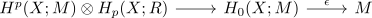

cap product and adjoint as evaluation
Proposition
Let $(X, \mathcal{T})$ be a topological space Then using the tensor hom adjunction for

where $\espilon$ is the augmentation map
the adjoint is given by
\begin{align*}
H^p(X;M) \rightarrow \mathrm{Hom}_{R}(H_p(X;R),M)
\end{align*}
Proof
The diagram
\begin{displaymath}
\begin{tikzcd}
C_{\mathrm{sing}i(X) \otimes C^{\mathrm{sing}}(X) \arrow[]{r}{\mathrm{id} \otimes \Delta }\arrow[]{rd}{\cong}& C_{\mathrm{sing}}(X) \otimes C^{\mathrm{sing}}(X) \otimes C^{\mathrm{sing}}(X) \arrow[]{r}{\mathrm{ev} \otimes \mathrm{id}} \arrow[]{d}{\mathrm{id} \otimes \epsilon }& C^{\mathrm{sing}}(X) \arrow[]{d}{\epsilon}\\
& C_{\mathrm{sing}}(X) \otimes C^{\mathrm{sing}}(X) \otimes \mathbb{Z}[0] \arrow[]{r}{\mathrm{ev}}& \mathbb{Z}[0]
\end{tikzcd}
\end{displaymath}commutes up to chain homotopy by pseudo diagonal and augmentation commutes up to chain homotopy
Here the composition on the top is precisely the cap product and the composition along the bottom induces the evaluation map